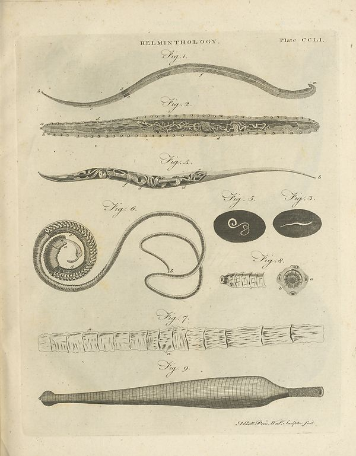

Scan ID britannica:309f765b1ecc83e0a7f7762e44b4a927a7555443:train:651
Image SHA-256 a4e89a900a4041b934828dcc5c677df6edf0de903ab97d097948b7b17427da7d
Status: plate. Running header: HELMINTHOLOGY. Plate CCLI (plate). Removed page furniture: Page-header: HELMINTHOLOGY. Plate CCLI, Page-footer: Sthold Owner Walls Instagram from.
PDF · raw Parse reply · LaTeX
Entries: none

| # | Class | Box | Parse 3.5 | Used text | Source |
|---|---|---|---|---|---|
| 1 | Caption | [0.4502, 0.1078, 0.5215, 0.1391] | Fig 1 | Fig 1 | parse |
| 2 | Caption | [0.4492, 0.2094, 0.542, 0.2437] | Fig.2. | Fig.2. | parse |
| 3 | Picture | [0.0977, 0.0773, 0.9004, 0.3125] | Fig.2. | Fig.2. | parse |
| 4 | Caption | [0.4453, 0.3359, 0.543, 0.3695] | Fig.1. | Fig.1. | parse |
| 5 | Picture | [0.0879, 0.4797, 0.2939, 0.643] | O | O | parse |
| 6 | Picture | [0.5928, 0.4133, 0.9053, 0.5406] | Fig.3. Fig.3. | Fig.3. Fig.3. | parse |
| 7 | Picture | [0.6094, 0.5461, 0.8896, 0.6523] | Fig.8. | Fig.8. | parse |
| 8 | Caption | [0.4336, 0.6766, 0.5322, 0.7141] | Fig.7. | Fig.7. | parse |
| 9 | Picture | [0.1045, 0.7094, 0.9111, 0.7781] | Fig.9. | Fig.9. | parse |
| 10 | Caption | [0.4375, 0.7891, 0.5342, 0.8273] | Fig.9. | Fig.9. | parse |
Britannica scans: National Library of Scotland, CC0 1.0. Wikipedia text: Wikipedia contributors, CC BY-SA 4.0, revision links on each page. Generated 2026-10-18T13:26:14+00:00.